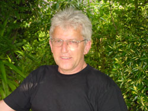
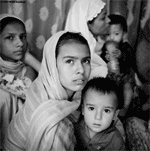

|
Zum 60. Geburtstag von Heinz Wolf, Initiator der Arbeitsgruppe Murgtal / Mittelbaden |
Mit Heinz Wolf feiert heute im Kuppenheimer Stadtteil Oberndorf ein Mann seinen 60. Geburtstag, dem das ehrenamtliche Engagement in die Wiege gelegt wurde. Wolf, ein echter Oberndorfer, setzt sich seit mehr als 30 Jahren für die Politik und Umwelt in seiner Heimat sowie für soziale Gerechtigkeit auf der Welt ein. Der Jubilar wurde am 23. Juni 1948 als Sohn der Eheleute Amalie und Otto Wolf geboren.
Gerade mal zwei Jahre mit seiner Frau Anne verheiratet und erst 27 Jahre alt, ließ sich der junge Lehrer als Sohn des ehemaligen Oberndorfer CDU-Bürgermeisters auf die SPD-Liste für die Gemeinderatswahlen setzen. Wolf setzt sich seit nunmehr 33 Jahren für die Geschicke seiner Heimatstadt ein. Im SPD-Ortsverein war er in verschiedenen Funktionen tätig und wird als „grünes Gewissen" seiner Partei bezeichnet. Von Anfang an fuhr Wolf zu jeder Gemeinderats- und Ausschusssitzung mit dem Fahrrad von Oberndorf nach Kuppenheim. Er war Visionär in Sachen alternative Energien, die zwischenzeitlich sowohl beim Rathausneubau, als auch beim Cuppamare realisiert wurden. Zudem setzte er sich für verkehrspolitische Belange ein, forderte stets einen Ausbau des Radwegenetzes, verkehrsberuhigte Zonen und zuletzt eine Kreisellösung beim E-Center.
Vor 31 Jahren starteten Anne und Heinz Wolf eine der erfolgreichsten Arbeitsgruppen von terre des hommes Deutschland, die zwischenzeitlich durch unzählige Veranstaltungen rund zwei Millionen Euro für Projekte in Asien, Afrika und Lateinamerika zusammentragen konnte. Motor dieser engagierten Arbeitsgruppe blieb über all die Jahre das heutige Geburtstagkind, dem das Wohl der Kinder auf dieser Welt am Herzen liegt.
BNN vom 23.06.2008 |
SPD-Bundestagsabgeordnete Nicolette Kressl lud Arbeitsgruppe Murgtal / Mittelbaden 4 Tage nach Berlin ein |
Die terre des hommes Arbeitsgruppe Murgtal/ Mittelbaden beschäftigte sich vier Tage lang intensiv mit der deutschen Politik der Vergangenheit und der Zukunft. Auf Einladung der SPD-Bundestagsabgeordneten Nicolette Kressl nahm die tdh-Gruppe an der politischen Tagung teil, zu der insgesamt 50 Bürgerinnen und Bürger aus dem Wahlkreis Rastatt/Baden-Baden nach Berlin gereist waren. Begleitet wurde die Gruppe von Wahlkreisbetreuerin Nina Weber.
Seit 1994 lädt Nicolette Kressl jährlich 100 Personen aus ihrem Wahlkreis nach Berlin ein, um ihnen in der Bundeshauptstadt einen Einblick in ihre Arbeit und die des Deutschen Bundestages zu vermitteln. „Die tdh-Arbeitsgruppe leistet hervorragende Arbeit, ein ehrenamtliches Engagement, das ich gerne unterstütze“, bemerkte Kressl im vergangenen Jahr, als die beim tdh-Kinderfest in Kuppenheim aus einem ihrer Lieblingskinderbücher vorgelesen hatte. Als kleine Anerkennung folgte nun die Einladung nach Berlin.
Neben einer nach politischen Gesichtspunkten festgelegten Stadtrundfahrt wurde die Gruppe durch die Ausstellung der Willy-Brand-Stiftung im Rathaus Schöneberg geführt, bei der die über 300 Exponate aus dem privaten und politischen Leben des deutschen Politikers und einstigen Bundeskanzlers erzählten. Im Paul-Löbe-Haus diskutierte die parlamentarische Staatssekretärin des Bundesfinanzministeriums mit der Gruppe über die B3 neu sowie die Steuerpolitik. Mit Interesse verfolgten die Gäste ihre Berichte über eine ganz normale Sitzungswoche in Berlin und ihre zahlreichen Verpflichtungen. Besucht wurden aber auch der neue in den alten Reichstag gebaute Plenarsaal des Deutschen Bundestages und die architektonisch einmalige Glaskuppel auf dem Dach des Reichtagsgebäudes. Betroffenheit herrschte dagegen beim Besuch der zentralen Untersuchungsanstalt der Stasi, der Gedenkstätte Hohenschönhausen, mit Zeitzeugen sowie des Informationszentrums bei den Stelen des Denkmals für die ermordeten Juden Europas. Weiter auf dem Programm standen ein Besuch im Willy-Brand-Haus sowie im Filmmuseum Berlin sowie ein Informationsgespräch im Bundesministerium für Finanzen.
|
Donnerstag, 19. Juni 2008 |
Rechte von Flüchtlingskindern in Europa stärken
terre des hommes fordert kindgerechte Behandlung minderjähriger Flüchtlinge |
Flüchtlingskinder werden in Deutschland und auf europäischer Ebene nicht kindgerecht behandelt. Anlässlich des Tages des Flüchtlings am 20. Juni fordert die Kinderhilfsorganisation terre des hommes, die bestehende Praxis im Asylverfahren zu ändern. »Es ist ein krasser Verstoß gegen die UN-Kinderrechtskonvention, dass 16 bis 18-jährige Kinder in Abschiebehaft genommen werden und keinen gleichberechtigten Zugang zu Schule, Ausbildung und Arbeit erhalten«, so Andreas Meißner, Flüchtlingsexperte von terre des hommes. »Sie fristen ihr Dasein allzu oft mit einem unsicheren Aufenthaltsstatus.« terre des hommes fordert Deutschland und die EU-Staaten auf, die UN-Kinderrechtskonvention voll umzusetzen und damit endlich einen wirksamen Beitrag zum Schutz von minderjährigen Flüchtlingen zu leisten.
Die Europäische Kommission hat Ende 2007 Vorschläge für eine weitreichende Harmonisierung des europäischen Asylrechts gemacht, die bis 2010 erreicht werden soll. Es zeichnet sich jedoch ab, dass die EU sich letztendlich nur auf den kleinsten gemeinsamen Nenner einigt und besonders für Kinder keine ausreichenden Schutzmaßnahmen getroffen werden. »Flüchtlingskinder brauchen überall gleich hohe Schutzstandards, egal in welches europäische Land sie fliehen. Ihnen muss Zugang zu Bildung gewährt werden, und wenn sie unbegleitet sind, brauchen sie einen qualifizierten Vormund«, so Andreas Meißner. »Sie benötigen schnellstmöglich einen legalen Aufenthaltstitel und dürfen nicht in Abschiebehaft genommen werden.«
Weltweit sind nach Angaben des UNHCR etwa 40 Millionen Menschen auf der Flucht. Davon kommen ungefähr zehn Prozent nach Europa, von diesen ist etwa die Hälfte minderjährig. Im Jahr 2006 waren in Deutschland 45 Prozent der Asylerstantragsteller unter 18 Jahren alt. Minderjährige Kinder suchen in Europa Schutz vor Krieg, Gewalt, Ausbeutung, Vertreibung oder Zwangsrekrutierung. |
Mehr und bessere Entwicklungshilfe für Gesundheit
Europäisches Netzwerk: Defizite bei der Förderung weltweiter Gesundheit |
Eine mangelhafte Koordination der Entwicklungshilfegeber und eine unüberschaubare Vielzahl unterschiedlicher Programmstrategien behindern die Wirksamkeit der Entwicklungshilfe zur Förderung weltweiter Gesundheit. Dies ist das Resumee eines Berichtes, den das europäische Netzwerk Action for Global Health heute veröffentlicht.
»Die Entwicklungshilfeleistungen der Industrieländer waren 2007 rückläufig, und auch aus der Finanzierung von Gesundheitsprogrammen ziehen sich manche Geberländer zurück. So werden wir die vereinbarten Millenniumsentwicklungsziele zur Verbesserung der Gesundheit von Müttern und zur Verminderung der Kindersterblichkeit nicht erreichen«, erklärt Ruth Duggan, terre des hommes-Expertin für Gesundheit. Ein weiteres Problem sei die mangelhafte Koordination der Entwicklungshilfe, die bei den Empfängern oft Unklarheit und Mehrarbeit zur Folge habe. »Einige Entwicklungshilfegeber bevorzugen projektungebundene Budgetfinanzierungen, andere wollen im gleichen Land nur konkrete Projekte fördern. Hier muss eine bessere Koordination auf Ebene der Europäischen Union stattfinden«, so Ruth Duggan.
Der Bericht legt einen Schwerpunkt auf die Situation in Indonesien, wo ein Viertel aller Einwohner unter Armut leiden. »Bei indonesischen Kindern aus armen Familien ist das Sterblichkeitsrisiko bis zum 5. Lebensjahr viermal höher als bei wohlhabenderen Kindern«, sagt Stephan Kreischer, Gesundheitsexperte der Welthungerhilfe. Unterstützt von deutscher Entwicklungshilfe bemühe sich die indonesische Regierung jedoch durchaus erfolgreich darum, das öffentliche Gesundheitswesen zu verbessern und die verschiedenen Förderprogramme zu koordinieren. »Es ist deshalb unverständlich, dass die Bundesregierung gegen den Wunsch Indonesiens beschlossen hat, Gesundheit als Schwerpunkt der Entwicklungszusammenarbeit in Indonesien zu streichen«, so Kreischer.
Welthungerhilfe und terre des hommes als deutsche Mitglieder des Netzwerkes Action for Global Health fordern eine Beibehaltung des Schwerpunkts und einen verstärkten Einsatz gegen Korruption und Ineffizienz bei der Vergabe von Entwicklungshilfegeldern. Das Fehlen klarer Verantwortung auf internationaler Ebene dürfte nicht als Vorwand gelten, die Hilfszusagen für Gesundheit zu reduzieren und bereits versprochene Mittel zurückzuhalten.
Weitere Informationen
»Action for Global Health« wurde Oktober 2006 gegründet. In dem Netzwerk sind fünfzehn Nichtregierungsorganisationen aus den Bereichen Gesundheit und Entwicklungszusammenarbeit aus mehreren europäischen Ländern zusammengeschlossen, darunter Frankreich, Deutschland, Italien, Spanien und Großbritannien. Ziel ist es, Regierungshandeln in Europa bezüglich der Gesundheitssituation in Entwicklungsländern zu überwachen, und Entscheidungsträger zu beeinflussen, ihre Praxis zu ändern. Sitz des Netzwerks ist Brüssel.
http://www.actionforglobalhealth.eu/ |
Einnahmerekord für terre des hommes-Lausanne |
Im Jahr 2007 trug terre des hommes-Lausanne zur Gesundheit und zum Schutz von über einer Million Kindern und ihren Angehörigen bei. Die Anzahl Begünstigter hat sich in den letzten vier Jahren verdoppelt. Mit Einnahmen in Höhe von 55 Millionen Franken (44,6 Millionen 2006) verzeichnet die größte Kinderhilfsorganisation der Schweiz einen Zuwachs von 23 Prozent.
Weiterlesen auf der Website von tdh Lausanne |
Regina Halmich kämpft nun für Straßenkinder
Ehemalige Boxweltmeisterin wird Botschafterin des »Bündnis für Straßenkinder in Deutschland« |
Die erfolgreichste Boxerin aller Zeiten, Regina Halmich, wird künftig das »Bündnis für Straßenkinder in Deutschland« bei seiner Arbeit unterstützen. Das Bündnis war im März auf Initiative des Kinderhilfswerks terre des hommes gegründet worden. Regina Halmich, die ihre Karriere inzwischen beendet hat, wird sich gemeinsam mit dem Bündnis für jene Kinder und Jugendlichen einsetzen, die sich in Obdachlosigkeit befinden oder von dieser bedroht sind.
»Wir sind außerordentlich froh darüber, dass sich Regina Halmich für unsere Arbeit interessiert und wir nun eine so prominente Unterstützerin bekommen haben«, so Uwe Britten, Sprecher des Bündnisses für Straßenkinder. »Wir können jede Unterstützung gebrauchen, um zukünftig jungen Menschen, aber auch ihren Eltern besser helfen zu können. Obdachlosigkeit von Jugendlichen und jungen Erwachsnen in einer reichen Gesellschaft wollen wir nicht hinnehmen.«
Geplant ist, dass Regina Halmich Projekte des Bündnisses besucht und mit den Jugendlichen sogar Trainingseinheiten absolviert. Die hohe Glaubwürdigkeit Regina Halmichs gerade bei jungen Menschen soll genutzt werden, um diesen zu vermitteln, dass Einsatzwille und der Glaube an sich selbst hilft, nicht in der Resignation zu versinken. Das »Bündnis für Straßenkinder in Deutschland« ist ein Zusammenschluss von mehr als 20 Organisationen aus dem gesamten Bundesgebiet. Nach eigenen Berechnungen schätzt das Bündnis die Zahl der Kinder, Jugendlichen und jungen Erwachsenen auf der Straße in Deutschland auf mindestens 9.000. Die Organisationen werden zukünftig vor allem daran arbeiten, die Straßensozialarbeit, das betreute Jugendwohnen und die Hilfen für Eltern zu verbessern.
Weitere Informationen:
|
|
|
|
 Ansprechpartner Ansprechpartner
|
|
Wolfgang Deppisch
(Projektinfos)
Tel. 07222 / 32927
Heinz Wolf
(Sponsoring, Allgemeines)
Tel. 07225 / 75543
weitere Ansprechpartner
|
|
Erlöse
1992-2012
|
|

Jahr |
Euro |
1992 |
70.000 |
1993 |
75.600 |
1994 |
83.883 |
1995 |
69.617 |
1996 |
51.412 |
1997 |
61.749 |
1998 |
60.333 |
1999 |
68.742 |
2000 |
85.492 |
2001 |
106.375 |
2002 |
78.937 |
2003 |
84.027 |
2004 |
76.662 |
2005 |
149.941 |
2006 |
84.497 |
2007 |
105.958 |
2008 |
104.053 |
2009 |
100.833 |
2010 |
107.254 |
2011 |
103.600 |
| 2012 |
158.250 |
| 2013 |
163.420 |
1977-2013 |
mehr als 2,7 Mio. € |
|
Detailansicht der Erlöszahlen |
|
|


;)
;)
;)
;)